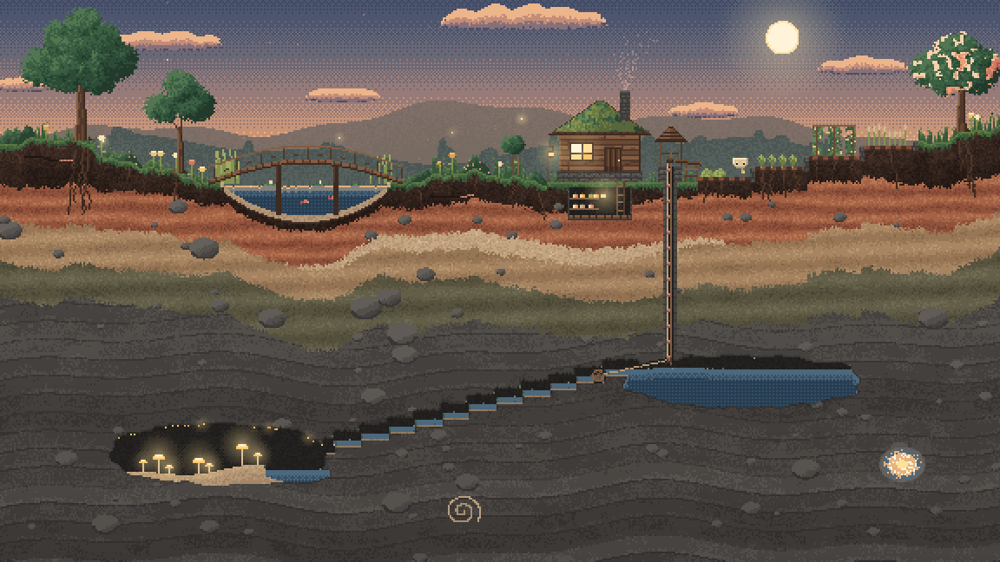

Silt Status: In development
Seen from the side
Every afternoon leaves a layer.
Every grain is simulated.
You are small here. It is quiet.
Exhibit A: The film
00:00 / 01:00
Plant something. See what the world makes of it.
The film is staged.
Exhibit B: Cross-section

T+0000000
Grains moved 000,000,000 Living grains 000,000
Leave whenever you like. It keeps your place.
Exhibit C: One seed
"It will not grow this way again."
Let it settle.